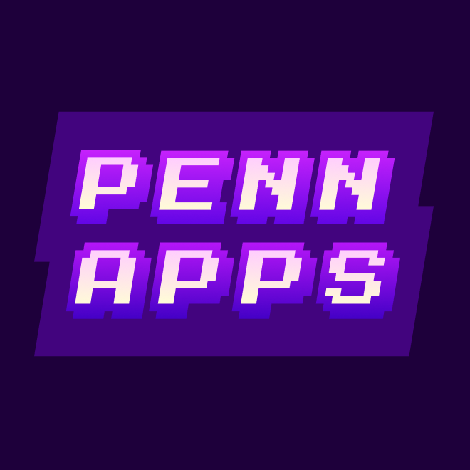

Blockchain - ArcAid
- Secured the Best Education Hack award at PennApps XXIV hosted by University of Pennsylvania, ranking among the top 8 teams out of 354 participants.
- Developed ArcAid to streamline the $200B+ student aid process using Aleo's zk-SNARKs. Implemented 2FA with USB and SHA256 encryption, built using Next.js and managed the database with Prisma ORM and PlanetScale.
Telegram Bot - Study Buddy

- Directed the development of a Telegram Bot aimed at connecting students to form study groups
- Deployed to 80 Engineering students in our pilot program, with 29 current active users
- Conceptualized expansion plans targeting NUS College of Design and Engineering in 2023
- Built in Python with MongoDB for backend and Heroku for deployment
Game Development - Orbital

A self-directed Independent Software Development Project with structured peer evaluation, critique and presentation milestones, for students to pick up software development skills on their own
- Programmed a single-player precision platformer game, using sprites and art style adapted from classic games, with around 1 hour of playtime
- Built in C# using the Unity game engine